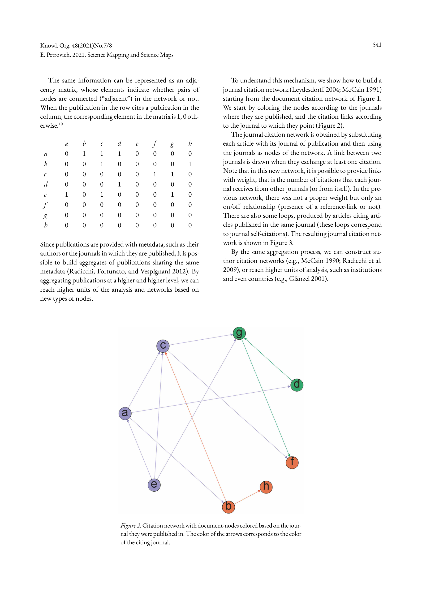
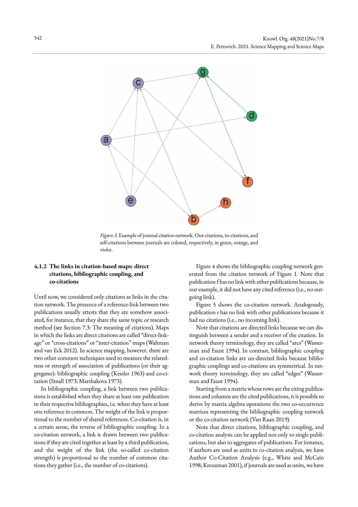

Figure 1
저자: Eugenio Petrovich | 날짜: 2021 | Journal: Knowledge Organization | DOI: 10.5771/0943-7444-2021-7-8-535
Figure 1
Science mapping의 개념적, 이론적, 방법론적 쟁점을 포괄적으로 정리한 백과사전적 리뷰 논문이다. Citation-based map(direct citation, bibliographic coupling, co-citation), term-based map(co-word analysis, NLP 기반), co-authorship network, interlocking editorship network, patent map, geographic map 등 주요 유형을 체계적으로 분류하고, 데이터 수집부터 전처리, 네트워크 추출, 정규화, 시각화(graph-based vs. distance-based), enrichment(clustering, overlay), 해석에 이르는 7단계 워크플로우를 제시한다. 또한 science map의 객관성, 출판된 과학 vs. 실행 중인 과학, 인용의 의미 등 인식론적 쟁점까지 논의한다.

Figure 2

Figure 3

Figure 4

Figure 5
총평: Science mapping 분야의 개념적, 방법론적 지형을 비전문가도 이해할 수 있도록 명쾌하게 정리한 우수한 입문서로, 인식론적 논의까지 포함하여 깊이가 있으나, embedding/deep learning 등 최신 방법론의 부재가 아쉽다.